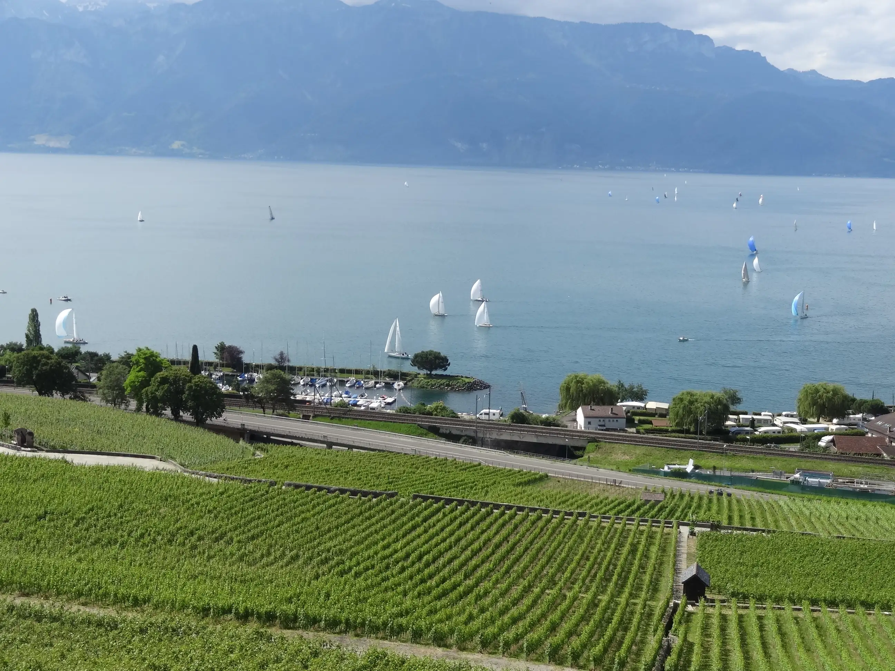
Vignerons à CullyEpesses, Lavaux
Trois générations de la famille Longet‑Voruz, de la vigne à la bouteille.
Le domaine
Au cœur du vignoble en terrasses de Lavaux, classé au patrimoine mondial de l'Unesco, notre exploitation familiale est cultivée depuis trois générations. Tout le domaine est situé dans la zone d'appellation Epesses.
Nous suivons nos produits de la vigne jusqu'à la vente.
- Chasselasblanc
- Viognierblanc
- Pinot noirrouge
- Diolinoirrouge, et rosé
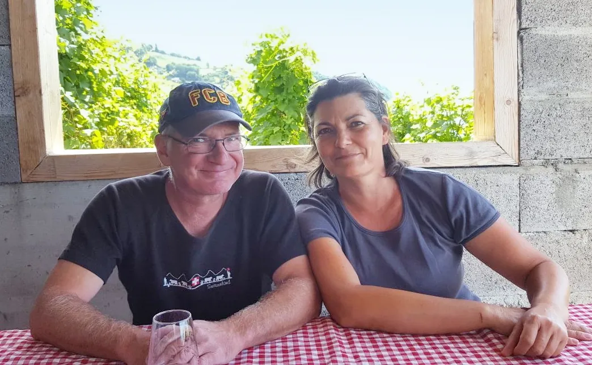
Nos vins
Vente directe au domaine ou envoi par la poste. Cartes de paiement et cartes bancaires acceptées.
-
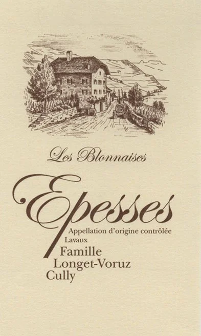
15.-70 clLes Blonnaises
Terroir typé de l'appellation, fin et équilibré, gouleyant à souhait. Idéal pour l'apéritif, les poissons et crustacés, et bien entendu la raclette et la fondue. À servir entre 10 et 12 °C.
-
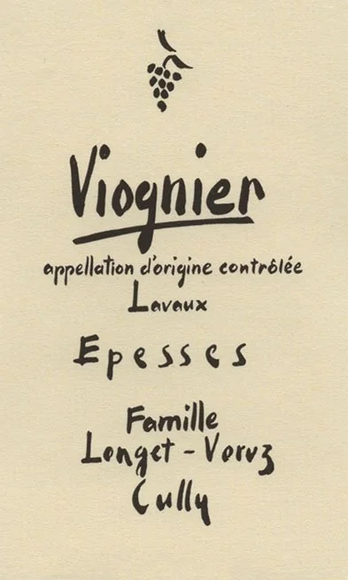
25.-70 clViognier
Très parfumé, aux arômes d'abricot et de pamplemousse, harmonieux et rond. Avec poissons, crustacés, fromages à pâte dure, viandes blanches et foie gras. À 12 °C.
-
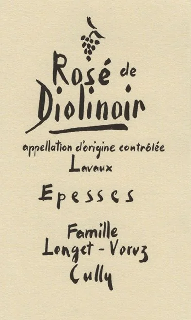
12.-50 clRosé de Diolinoir
D'un rose intense, fruité et racé, avec beaucoup d'ampleur et d'élégance en bouche. En apéritif, avec des mets asiatiques ou des entrées froides. Entre 10 et 12 °C.
-
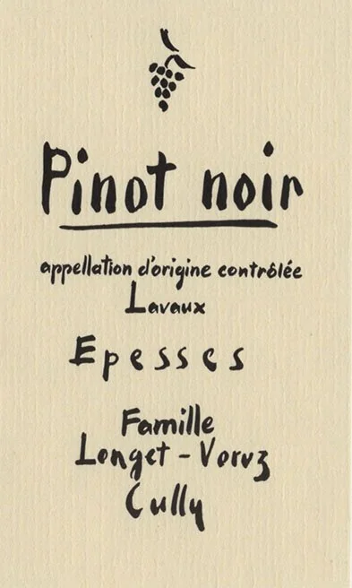
16.-70 clPinot noir
Riche et fruité, aux tanins fins. Il s'apprécie avec le repas et les fromages de nos régions. Entre 15 et 17 °C.
-
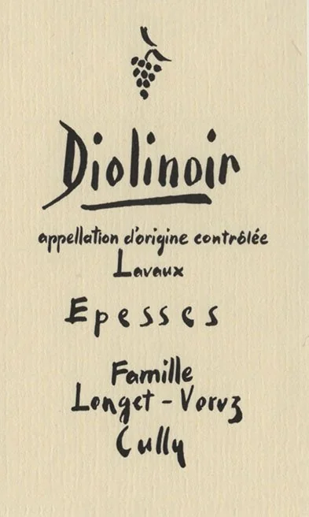
28.-70 clDiolinoir
Élevé en barrique, très bon potentiel de garde. Robe foncée, arômes de fruits rouges, riche et corsé. Gibier, viandes rouges, mets épicés, tartare, cuisine chinoise et chocolat noir. Entre 16 et 18 °C.
-
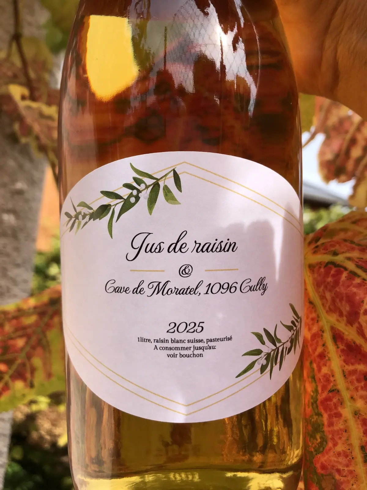
10.-1 LJus de raisin blanc
Existe aussi en 3 L, en bag in box : se conserve longtemps, au frigo ou à température ambiante. 100 % naturel, sans sucres ajoutés.
Expédition en cartons de 6 ou 12 × 70 cl, ou 12 × 50 cl. Port offert dès 60 bouteilles.
Pour tout renseignement ou toute commande : 079 645 40 66 · longetvoruz@cavedemoratel.ch
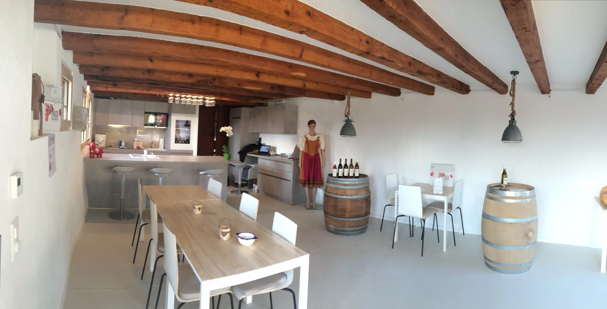
Le caveau
Ouvert tous les jours, de 11 h à 17 h, ou sur demande.
Le vigneron et sa famille vous accueillent sur leur domaine, au rez-de-chaussée d'une ancienne grange rénovée.
Plusieurs formules permettent de déguster les vins, au verre ou à la bouteille, avec des plateaux de fromage, de charcuterie ou autres selon vos souhaits. Boissons sans alcool également. Possibilité d'acheter du vin à l'emporter. Nous vous recevons individuellement ou en groupe.
- 18à l'intérieur
- 15en terrasse
- 8sous le couvert
Pour réserver : 079 259 26 49 (Patricia) ou 079 645 40 66 (Denis).
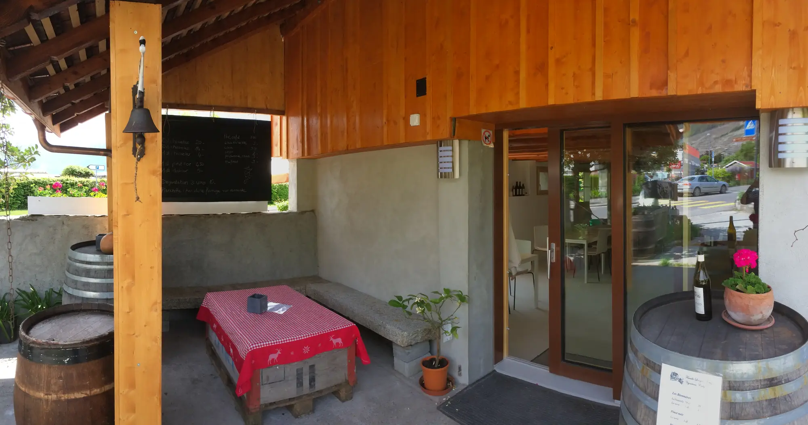
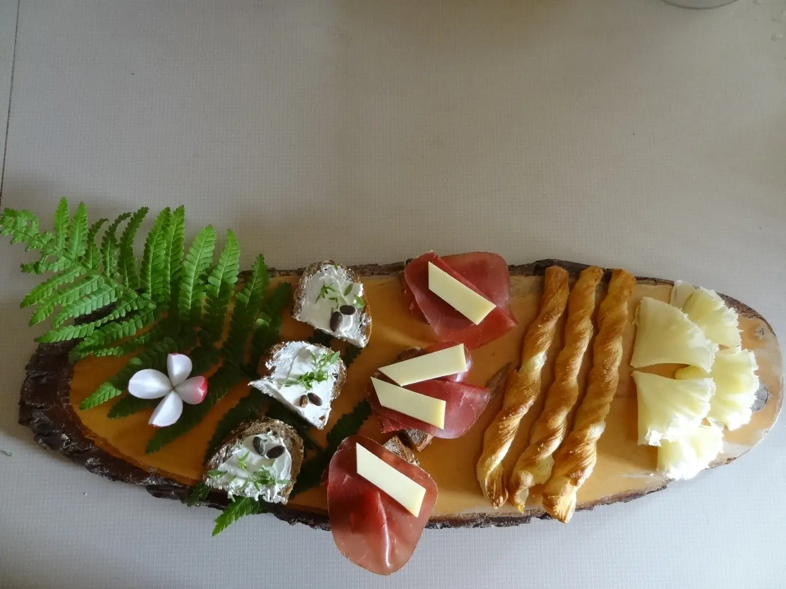
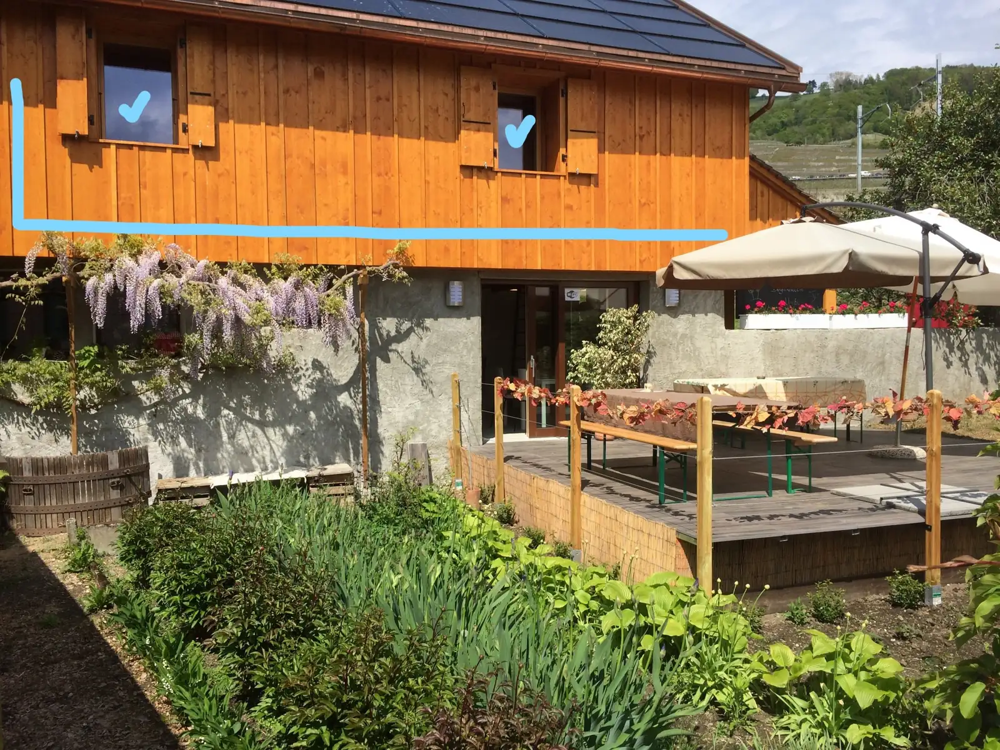
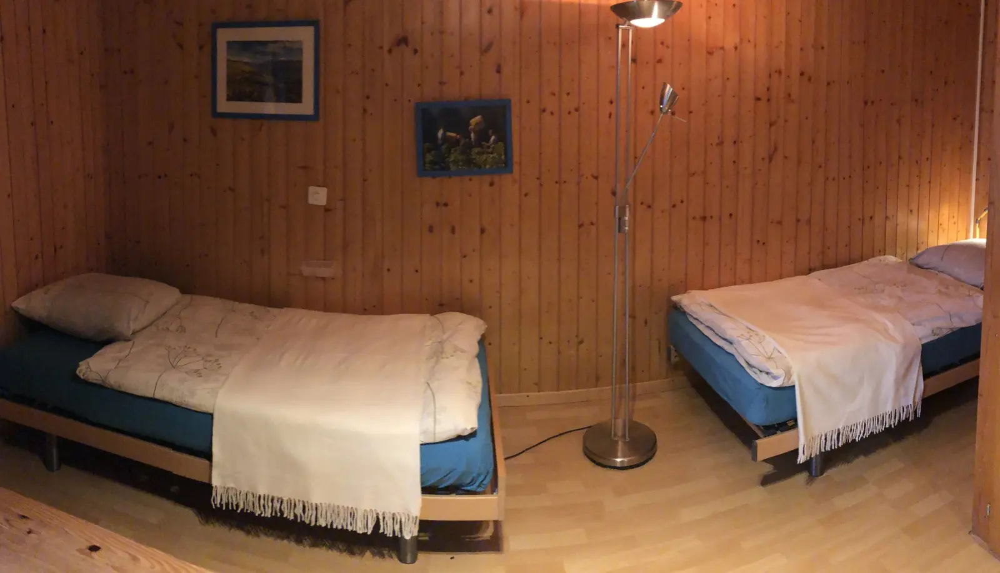
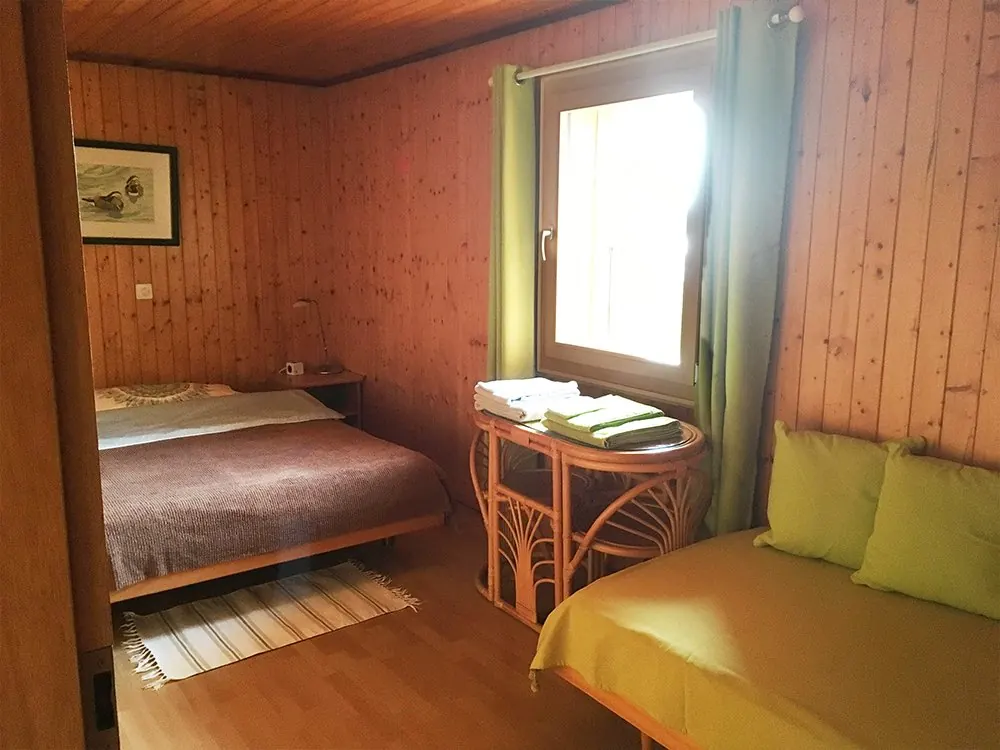
La chambre d'hôtes
Accueil chez le vigneron, dans une grange rénovée.
- 2 chambres, salle de bain avec douche, entrée individuelle, non-fumeur
- Pour 1 à 2 adultes avec ou sans enfants, ou pour 2 couples
- Wifi, TV, place de parc privée
- Carte de transport offerte, zone Lausanne–Montreux
- Près du port de plaisance et de la plage, à 10–15 min à pied de la gare et du débarcadère CGN
- Pas de petit-déjeuner · animaux non acceptés
Renseignements et réservation : Patricia Longet, 079 259 26 49, longetvoruz@cavedemoratel.ch
| Occupants | Par nuit, dès 2 nuits |
|---|---|
| 2 personnes | 140.- |
| 3 personnes | 180.- |
| 4 personnes | 200.- |
| Enfant | 20.- |
Prix en francs suisses, séjour minimum de 2 nuits. TVA et nettoyage inclus, taxe de séjour en sus. Cartes de paiement et cartes bancaires acceptées ; euros acceptés au cours du jour.
Venir
En voiture
Sortie d'autoroute Chexbres. Descendre la route de la Corniche vers Cully (profitez de la vue !). Au giratoire de Cully, prendre à gauche en direction de Vevey. Dernière maison à gauche, en face du camping.
En train
La gare de Cully est au centre du village, à quinze minutes à pied de la cave. Horaires sur cff.ch.
En bateau
La maison est aux abords du port de Moratel, ouvert aux visiteurs. Les bateaux CGN accostent à Cully : longez le lac pendant dix minutes. Horaires sur cgn.ch.
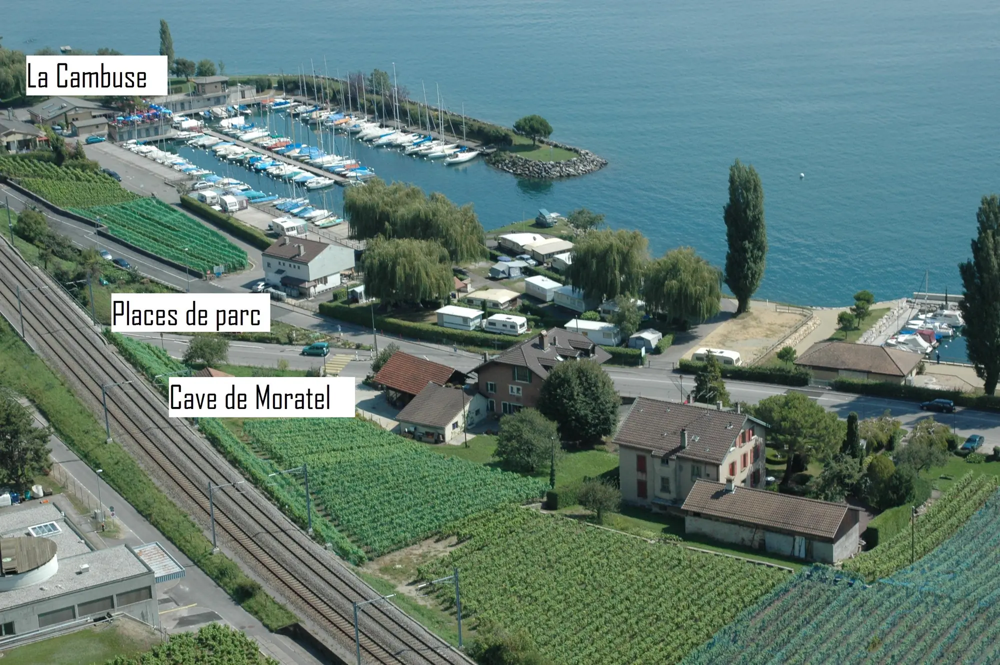